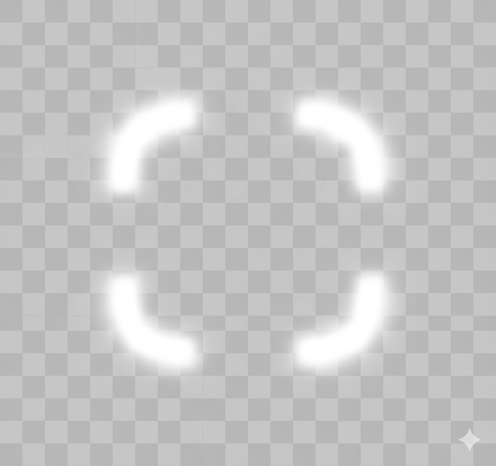

<!doctype html>
<html lang="zh">
  <head>
    <meta charset="UTF-8" />
    <meta name="viewport" content="width=device-width, initial-scale=1.0" />
    <title>Teleport</title>
    <script src="https://unpkg.com/vue@3/dist/vue.global.js"></script>
    <style>
      body {
        position: relative;
      }
      .notification-card {
        height: 100px;
        width: 200px;
        border: 1px solid gray;
        border-radius: 5px;
        box-shadow: 5px 5px rgba(88, 88, 88, 0.1);
      }
      .notification-card__full-screen {
        position: fixed;
        top: 0;
        left: 0;
        height: 100vh;
        width: 100vw;
        background-color: white;
        z-index: 9999;
      }
      .notification-card__title-box {
        display: flex;
        flex-direction: row;
        justify-content: space-between;
        height: 20px;
        line-height: 20px;
        font-size: 16px;
        padding: 0 8px;
      }
      .notification-card__title {
        font-weight: 500;
      }
      .notification_card__close-icon {
        cursor: pointer;
      }
      .notification-card__info {
        line-height: 16px;
        padding: 4px 8px;
        color: gray;
      }
      .have-fullsreen {
        overflow: hidden;
      }
    </style>
  </head>

  <body>
    <div id="app1"></div>
    <hr />
    <script type="module">
      const { createApp, ref, nextTick } = Vue;

      /**
       * <Teleport> 是一个内置组件，可以将一个组件内部的一部分模板“传送”到该组件 DOM 结构外层的位置去
       * 往目标元素的里面的最后放
       * 在使用的时候，要保证组件目标内容在挂载 <teleport> 之前就挂载了
       *
       * 只会改变 DOM 的结构，组件之间的父子关系是不会改变的
       *
       * 使用了 disabled，那么效果就相当于去掉了 <teleport> 标签，里面的内容，在原位置显示
       *
       * 加入了 defer 可以推迟 <teleport> 的目标解析，直到应用的其他部分挂载
       */
      const Component1 = {
        template: `
          <teleport to="#root1">
            <div>这个是 teleport 内的内容1</div>
          </teleport>
          <teleport defer to="#component2">
            <div>这个是 teleport 内的内容2</div>
          </teleport>
          <teleport defer to="body">
            <div>这个是 teleport 内的内容3</div>
          </teleport>
          <teleport to="body" disabled>
            <div>这个是 teleport 内的内容4</div>
          </teleport>
          <teleport defer to="#component2">
            <div>这个是 teleport 内的内容5</div>
          </teleport>
        `,
      };
      const Component2 = {
        template: `
          <div>
            <div>前</div>
            <div id="component2"></div>
            <div>后</div>
          </div>
        `,
      };
      const Component3 = {
        setup() {
          const isFullScreen = ref(false);
          const placeholderBoxRef = ref(null);
          const cardRef = ref(null);
          const changeFullScreen = async () => {
            if (isFullScreen.value) {
              placeholderBoxRef.value.style.display = 'none';
              document.body.classList.remove('have-fullsreen');
              // 其实更好的做法是通过添加和移除类名来进行 overflow 的设置，这样在退出全屏后，样式完全不会影响到body
            } else {
              const rect = cardRef.value.getBoundingClientRect();
              const height = rect.height;
              const width = rect.width;
              const display = cardRef.value.style.display;
              placeholderBoxRef.value.style.height = height + 'px';
              placeholderBoxRef.value.style.width = width + 'px';
              placeholderBoxRef.value.style.display = display;
              document.body.classList.add('have-fullsreen');
            }
            isFullScreen.value = !isFullScreen.value;
          };
          return {
            placeholderBoxRef,
            cardRef,
            isFullScreen,
            changeFullScreen,
          };
        },
        template: `
          <div ref="placeholderBoxRef"></div>
          <!-- 这里提供占位是为了保持当 body 有滚动条的时候，回到非全屏状态，不会出现位置移动 -->
          <teleport to="body" :disabled="!isFullScreen">
            <div ref="cardRef" class="notification-card" :class="{'notification-card__full-screen': isFullScreen}">
              <div class="notification-card__title-box">
                <div class="notification-card__title">title</div>
                <div class="notification_card__close-icon" @click="changeFullScreen">
                  
                  
                </div>
              </div>
              <div class="notification-card__info">内容</div>
            </div>
          </teleport>
        `,
      };
      createApp({
        components: {
          Component1,
          Component2,
          Component3,
        },
        template: `
          <div id="root1">
            <Component2 />
            <div>前 root1</div>
              <div>
                <Component1 />
              </div>
            <div>后 root1</div>
          </div>
          <br /><br /><br /><br /><br /><br /><br /><br /><br /><br /><br /><br /><br /><br /><br /><br /><br /><br /><br /><br /><br /><br /><br /><br /><br /><br /><br />
          <div>
            <div>
              <div>
                <Component3 />
              </div>
            </div>
          </div>
        `,
      }).mount('#app1');
    </script>
  </body>
</html>
